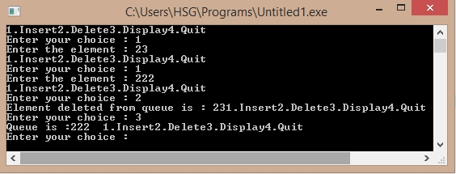

/*C Program to implement Queue using an Array*/
#include<stdio.h>
#define Max 30
int queue_arr[Max];
int rear = -1;
int front = -1;
main()
{
int choice;
while(1){
printf("1.Insert
");
printf("2.Delete");
printf("3.Display");
printf("4.Quit");
printf("\nEnter your choice : ");
scanf("%d",&choice);
switch(choice){
case 1 :
insert();
break;
case 2 :
del();
break;
case 3:
display();
break;
case 4:
exit(1);
default:
printf("Wrong choice");
}/*End of switch*/
}/*End of while */
}/*End of main()
*/
insert()
{
int added_item;
if (rear==Max-1)
printf("Queue Overflow");
else
{
if (front==-1) /*if queue is initially empty */
front=0;
printf("Enter the element : ");
scanf("%d", &added_item);
rear=rear+1;
queue_arr[rear] = added_item ;
}
}/*End of insert()*/
del(){
if (front == -1 || front > rear)
{
printf("Queue Underflow");
return ;
}
else
{
printf("Element deleted from queue is : %d", queue_arr[front]);
front=front+1;
}
}
/*End of del() */
display()
{
int i;
if (front == -1)
printf("Queue is empty");
else
{
printf("Queue is :");
for(i=front;i<= rear;i++)
printf("%d ",queue_arr[i]);
printf("
");
}}
/*End of display() */
Output:
